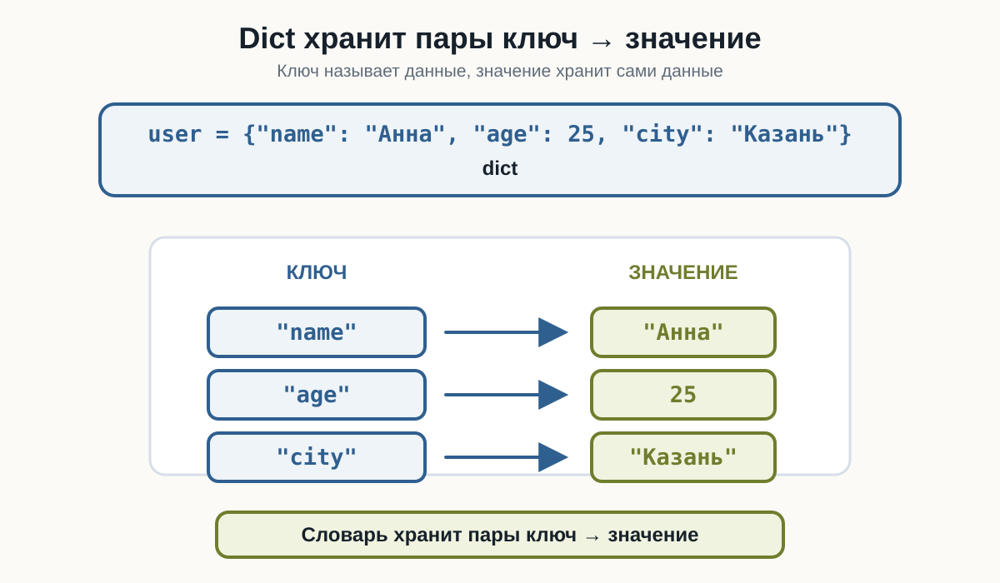
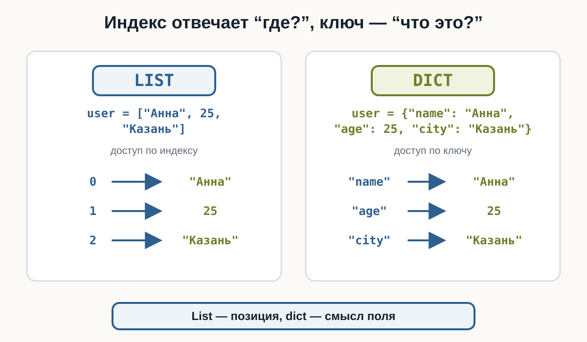
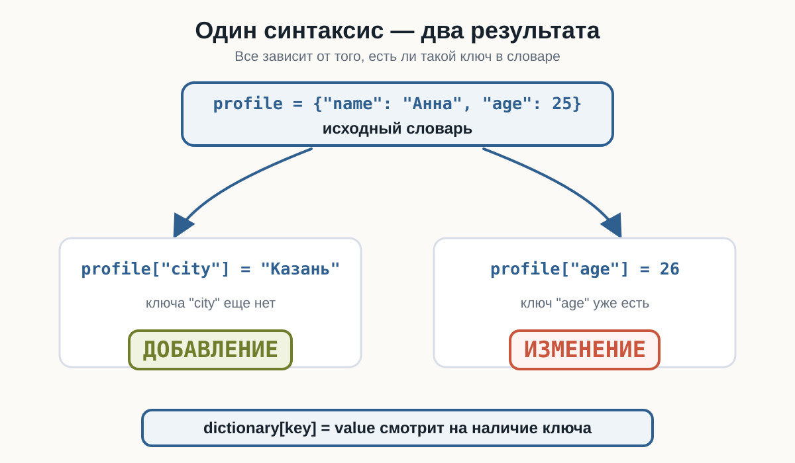
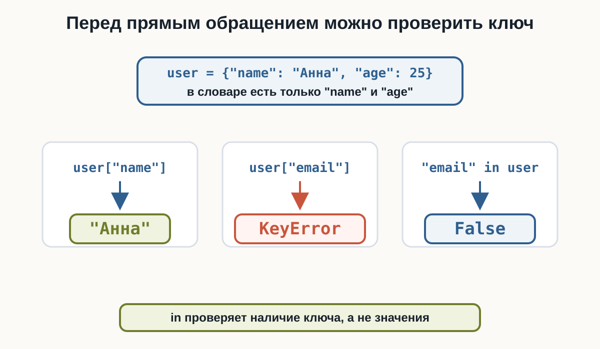
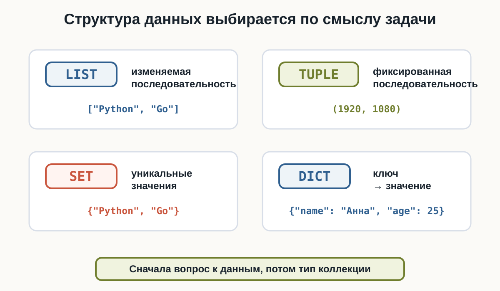

4.3 Словари
словари Python, dict Python, словарь Python для начинающих, ключи и значения Python, Python dictionary
Главный вопрос главы:
Как хранить связанные данные в формате «ключ → значение»?
В списках, кортежах и множествах мы работали с отдельными элементами:
languages = ["Python", "Java", "Go"]Но данные одного объекта часто состоят из именованных характеристик:
имя → Анна
возраст → 25
город → КазаньСписок такую информацию хранить может:
user = ["Анна", 25, "Казань"]Но тогда нужно помнить, что означает каждая позиция. Словарь позволяет обратиться к данным по смыслу:
user["name"]
user["age"]
user["city"]Что такое словарь
Словарь хранит данные в виде пар:
ключ → значениеПример:
user = {
"name": "Анна",
"age": 25,
"city": "Казань"
}Здесь ключи "name", "age" и "city" указывают, что означает каждое значение.
Тип словаря называется dict. Количество пар возвращает len():
user = {
"name": "Анна",
"age": 25,
"city": "Казань"
}
print(user)
print(type(user))
print(len(user))Результат:
{'name': 'Анна', 'age': 25, 'city': 'Казань'}
<class 'dict'>
3Ключ и значение
Каждая запись словаря состоит из ключа и значения:
"name": "Анна"Слева находится ключ, справа — значение. Между ними ставится двоеточие, а пары разделяются запятыми:
user = {
"name": "Анна",
"age": 25,
"city": "Казань"
}Ключ позволяет понять, что означает значение, без знания его позиции.

Создание словаря
Небольшой словарь можно записать в одну строку:
product = {"name": "Ноутбук", "price": 85000}Если полей несколько, удобнее использовать несколько строк:
product = {
"name": "Ноутбук",
"price": 85000,
"available": True
}Так структуру легче читать.
Пустой словарь
Пустой словарь создаётся фигурными скобками:
settings = {}Проверим:
settings = {}
print(settings)
print(type(settings))Результат:
{}
<class 'dict'>Связь с предыдущей главой:
{} → dict
set() → setДля пустого множества по-прежнему используется set().
Получение значения по ключу
Чтобы получить значение, после имени словаря указывают ключ в квадратных скобках:
dictionary[key]Пример:
product = {
"name": "Ноутбук",
"price": 85000,
"available": True
}
print(product["name"])
print(product["price"])
print(product["available"])Результат:
Ноутбук
85000
TrueГлавная идея: мы обращаемся не к позиции, а к конкретному ключу.
Ключи — не индексы
У списка значение получают по индексу:
user = ["Анна", 25, "Казань"]
print(user[0])У словаря значение получают по ключу:
user = {
"name": "Анна",
"age": 25,
"city": "Казань"
}
print(user["name"])Индекс отвечает на вопрос «где?». Ключ отвечает на вопрос «что это?».

Запись:
user[0]не означает «первое значение словаря». Она означает: найти значение с ключом 0. Если такого ключа нет, возникнет ошибка.
Если ключа нет
Прямое обращение через квадратные скобки предполагает, что ключ существует:
user = {
"name": "Анна",
"age": 25
}
print(user["email"])Ключа "email" нет, поэтому Python сообщит:
KeyErrordict-key-error.py
user = {
"name": "Анна",
"age": 25
}
print(user["email"])Обращение:
data["key"]безопасно только тогда, когда такой ключ действительно есть в словаре.
Добавление новой пары
Чтобы добавить новую пару, присвойте значение новому ключу:
profile = {
"nickname": "Neo",
"level": 12
}
profile["server"] = "EU-1"
print(profile)Если ключа ещё нет, создаётся новая пара ключ → значение.
Изменение значения
Если ключ уже существует, та же запись изменит значение:
game = {
"title": "Python Quest",
"score": 1200
}
game["score"] = 1450
print(game)Результат:
{'title': 'Python Quest', 'score': 1450}Один синтаксис — два результата
Запись:
dictionary[key] = valueработает по-разному в зависимости от ключа:
ключа нет → добавление новой пары
ключ есть → изменение значения
Значения могут иметь разные типы
Один словарь может описывать объект с разными характеристиками:
course = {
"title": "Python",
"lessons": 42,
"price": 19.99,
"available": True
}Здесь значения имеют разные типы:
"title" → str
"lessons" → int
"price" → float
"available" → boolКлючи должны быть уникальными
В одном словаре каждый ключ обозначает одно значение.
Не следует создавать словарь с повторяющимися ключами:
data = {
"name": "Анна",
"name": "Мария"
}Одинаковые ключи не создают две независимые записи. Последнее значение заменяет предыдущее:
data = {
"name": "Анна",
"name": "Мария"
}
print(data["name"])Результат:
МарияКоличество пар
Для словаря работает len():
user = {
"name": "Анна",
"age": 25,
"city": "Казань"
}
print(len(user))Результат:
3len() возвращает количество пар ключ → значение.
Проверка наличия ключа
Оператор in проверяет наличие ключа:
device = {
"name": "Sensor A",
"status": "online"
}
if "temperature" in device:
print(device["temperature"])
else:
print("Температура неизвестна")Для проверки отсутствия используется not in:
if "email" not in user:
print("Email не указан")В выражении:
"name" in userPython проверяет наличие ключа "name". Значения словаря здесь не проверяются.

Удаление пары
Пару можно удалить с помощью del:
session = {
"player": "Alex",
"score": 1250,
"temporary_code": "X7F9"
}
del session["temporary_code"]
print(session)После удаления ключа "temporary_code" в словаре больше нет.
Если попытаться удалить отсутствующий ключ, возникнет KeyError.
Пример: карточка товара
Словарь удобно использовать для описания одного объекта:
product = {
"name": "Механическая клавиатура",
"price": 7490,
"available": True
}
print("Товар:", product["name"])
print("Цена:", product["price"])
product["price"] = 6990
product["rating"] = 4.8
print(product)Здесь мы получили значения по ключам, изменили цену и добавили новое поле.
Итоговый пример
Соберём базовые операции словаря в одном сценарии:
spaceship = {
"name": "Odyssey",
"fuel": 80,
"crew": 4,
"active": True
}
spaceship["fuel"] = spaceship["fuel"] - 15
spaceship["destination"] = "Mars"
if "autopilot" not in spaceship:
spaceship["autopilot"] = False
print("Корабль:", spaceship["name"])
print("Топливо:", spaceship["fuel"])
print("Характеристик:", len(spaceship))
print(spaceship)Список или словарь
Список удобен, когда важна последовательность элементов:
temperatures = [18, 20, 19, 22]Словарь удобен, когда значения имеют собственные имена:
weather = {
"city": "Казань",
"temperature": 20,
"wind": "северный"
}Общий ориентир:
| Структура | Когда использовать | Пример |
|---|---|---|
list |
изменяемая последовательность | ["Python", "Go"] |
tuple |
фиксированная последовательность | (1920, 1080) |
set |
уникальные значения | {"Python", "Go"} |
dict |
пары ключ → значение |
{"name": "Анна", "age": 25} |

Что важно запомнить
Словарь имеет тип dict и хранит пары:
ключ → значениеБазовые действия:
user = {"name": "Анна", "age": 25}
print(user["name"])
user["city"] = "Казань"
user["age"] = 26
print("name" in user)
print(len(user))
del user["city"]Если обратиться к отсутствующему ключу:
user["email"]возникнет KeyError.
Практические задания
Задание 1. Космический аппарат
Создайте словарь с информацией о космическом аппарате:
name → Voyager 1
launched → 1977
active → TrueВыведите название аппарата и год запуска.
spacecraft = {
"name": "Voyager 1",
"launched": 1977,
"active": True
}
print(spacecraft["name"])
print(spacecraft["launched"])Задание 2. Игровой персонаж
Дан персонаж:
player = {
"name": "Raven",
"health": 100,
"level": 7
}После боя здоровье уменьшилось до 65. Измените словарь и выведите новое значение здоровья.
player = {
"name": "Raven",
"health": 100,
"level": 7
}
player["health"] = 65
print(player["health"])Задание 3. Фильм
Дан фильм:
movie = {
"title": "Interstellar",
"year": 2014
}Добавьте рейтинг 8.7, а затем выведите весь словарь.
movie = {
"title": "Interstellar",
"year": 2014
}
movie["rating"] = 8.7
print(movie)Задание 4. Компьютер
Дано описание компьютера:
computer = {
"cpu": "Ryzen 7",
"ram": 32,
"ssd": 1000
}Проверьте, присутствует ли ключ "gpu". Если его нет, выведите:
Видеокарта не указанаcomputer = {
"cpu": "Ryzen 7",
"ram": 32,
"ssd": 1000
}
if "gpu" not in computer:
print("Видеокарта не указана")Задание 5. Игровая сессия
Дана игровая сессия:
session = {
"player": "Alex",
"score": 1250,
"temporary_code": "X7F9"
}Удалите "temporary_code" и выведите словарь.
session = {
"player": "Alex",
"score": 1250,
"temporary_code": "X7F9"
}
del session["temporary_code"]
print(session)Задание 6. Автомобиль
Дан автомобиль:
car = {
"brand": "Volvo",
"model": "XC60",
"year": 2024,
"electric": False
}Определите количество характеристик с помощью Python, не считая их вручную.
car = {
"brand": "Volvo",
"model": "XC60",
"year": 2024,
"electric": False
}
print(len(car))Результат:
4Задание 7. Склад
На складе хранится информация:
item = {
"name": "Монитор",
"price": 32000,
"quantity": 4
}Поступило ещё 3 монитора. Не записывайте итоговое количество вручную: измените "quantity", используя его текущее значение.
item = {
"name": "Монитор",
"price": 32000,
"quantity": 4
}
item["quantity"] = item["quantity"] + 3
print(item["quantity"])Результат:
7Задание 8. Профиль игрока
Создайте словарь:
nickname → Neo
level → 12
coins → 450
premium → FalseЗатем выполните последовательно:
- увеличьте
levelна1; - добавьте
150монет к текущему количеству; - измените
premiumнаTrue; - добавьте новое поле
"server"со значением"EU-1"; - выведите итоговый словарь.
player = {
"nickname": "Neo",
"level": 12,
"coins": 450,
"premium": False
}
player["level"] = player["level"] + 1
player["coins"] = player["coins"] + 150
player["premium"] = True
player["server"] = "EU-1"
print(player)Задание 9. Датчик
Дан словарь:
device = {
"name": "Sensor A",
"status": "online"
}Напишите код, который выводит значение "temperature" только в том случае, если такой ключ существует. Если ключа нет, вывести:
Температура неизвестнаdevice = {
"name": "Sensor A",
"status": "online"
}
if "temperature" in device:
print(device["temperature"])
else:
print("Температура неизвестна")Задание 10. Книга
Создайте словарь, описывающий книгу. В нём должны быть поля:
title
author
year
availableПосле создания:
- выведите название и автора;
- измените
available; - добавьте поле
pages; - проверьте наличие поля
rating; - если его нет — добавьте рейтинг;
- удалите
year; - выведите количество оставшихся характеристик и итоговый словарь.
book = {
"title": "1984",
"author": "George Orwell",
"year": 1949,
"available": True
}
print(book["title"])
print(book["author"])
book["available"] = False
book["pages"] = 328
if "rating" not in book:
book["rating"] = 4.8
del book["year"]
print("Характеристик:", len(book))
print(book)Что дальше?
Теперь мы умеем создать словарь, получить значение по ключу, добавить новую пару, изменить значение, проверить наличие ключа и удалить пару.
Следующий естественный вопрос:
Как удобнее и безопаснее работать со словарём целиком?На него отвечает следующая глава — «Работа со словарями».
Словари Python: краткое резюме
Словарь (dict) в Python хранит данные в формате «ключ → значение». Такой формат удобен, когда отдельным характеристикам нужно дать понятные имена: например, имя пользователя, цену товара, статус заказа или настройки программы.
Словарь создаётся с помощью фигурных скобок {}. Значение можно получить через dictionary[key], новую пару добавить присваиванием, а существующее значение изменить через тот же ключ. Оператор in позволяет проверить наличие ключа, len() возвращает количество пар, а del удаляет запись.
Если ключ отсутствует, обращение через dictionary[key] приводит к KeyError. Поэтому перед прямым обращением полезно проверять ключ через in, когда отсутствие ключа является нормальной ситуацией.